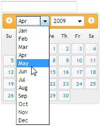
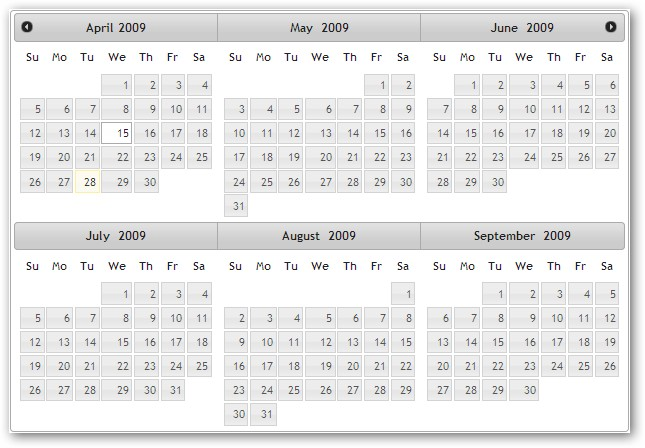

The following screen shots illustrate the Inline (set to False) and MultiMonth display modes of the jQueryUIDatePicker respectively.

Figure 465: Inline (set to False) Display Mode

Figure 466: MultiMonth Display Mode